User manual · version 0.2.0
ResoOG
A dual-layer bass synthesizer. Two complete monophonic synths stacked on top of each other, each with a dual oscillator, sub, noise, an overdriving mixer and a ladder filter, plus a modulation matrix and output effects. Concept after the Moog Mariana, sound and handling in the spirit of the Gavr plug-ins.
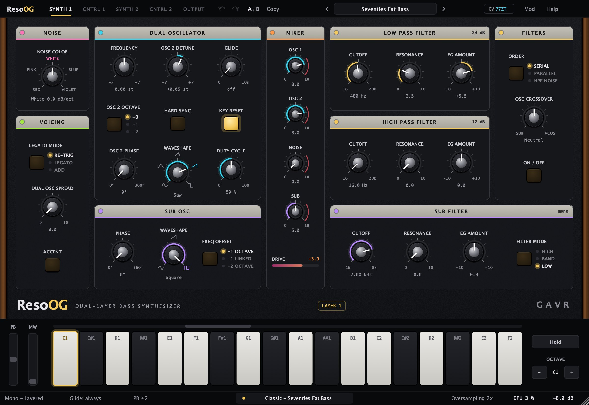
01How it works
ResoOG is two identical synthesizers (layers) stacked on top of each other. Each layer has its own sources, mixer, filters and envelopes. The pages are:
| Page | What it holds |
|---|---|
| SYNTH 1 / SYNTH 2 | The layer's sound: noise, dual oscillator, sub osc, mixer, low pass, high pass, sub filter, crossover, voicing. |
| CNTRL 1 / CNTRL 2 | The layer's modulators: 3 LFOs, filter envelope, amp envelope, mod envelope (DAHDSR), 2 random generators. |
| OUTPUT | Saturation and an effect per layer (delay on 1, chorus on 2), summing, FET compressor, volume and meters. |
Everything in the layer runs oversampled (2× by default), so oscillators, sync and resonance stay clean even high up. Modulation is computed every 32 samples and values glide smoothly in between, so nothing zippers.
Layered or DuophonicIn the bottom bar on the left: Layered = both layers play the same note (thick bass). Duophonic = synth 1 plays the lowest held note, synth 2 the highest (bass + lead with one hand).
02Quick start
- Put ResoOG on a MIDI track in Ableton (Plug-Ins → Gavr → ResoOG).
- Click the preset name at the top and pick a category, or step with the ◀ ▶ arrows. The menu shows what the preset is for and what to turn first.
- Play your MIDI keyboard or the keyboard at the bottom. The lower you click on a key, the harder the hit.
- On the SYNTH 1 page turn CUTOFF, RESONANCE and EG AMOUNT in the low pass filter. That is the heart of the sound.
- Want movement? On the CNTRL 1 page grab the arrow in an LFO header and drop it on a knob. A modulation is created.
Synth 2 is muted by defaultSo the default sound is one clean layer, the Init preset has MUTE 2 on. The SYNTH 2 and CNTRL 2 pages show a red badge at the bottom; click it to unmute the layer.
03The SYNTH page
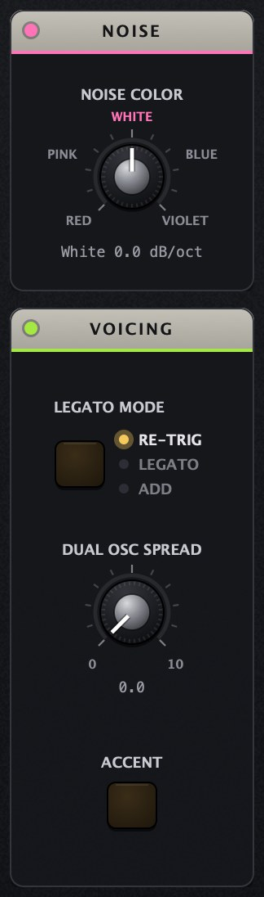
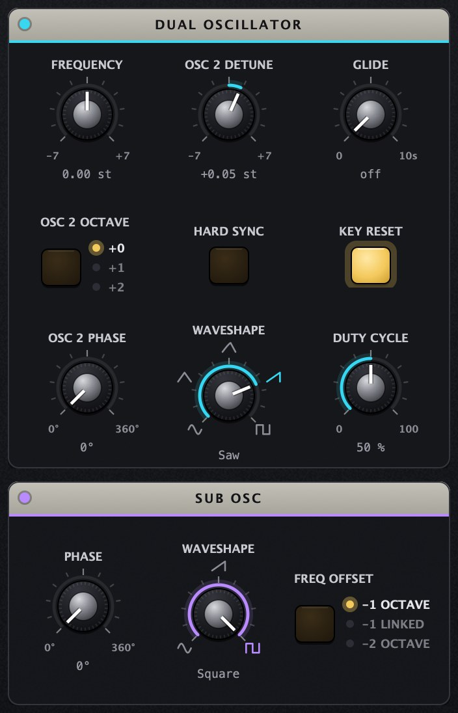
Dual oscillator
| Control | What it does |
|---|---|
| FREQUENCY | Tuning of both oscillators, ±7 semitones. |
| OSC 2 DETUNE | Detune of oscillator 2, ±7 semitones. Fine around the centre: +0.05 st gives slow beating, +7 a fifth. |
| GLIDE | Pitch slide between notes (0–10 s). Switch “Glide: always / legato” in the bottom bar. |
| OSC 2 OCTAVE | +0 / +1 / +2 octaves for oscillator 2. |
| HARD SYNC | Oscillator 2 restarts with every cycle of oscillator 1. Detune osc 2 (or modulate it) for the tearing sync sound. |
| KEY RESET | Oscillators start every note at the same phase: every bass hit has the same punch. Off = free running, more alive. |
| OSC 2 PHASE | Phase of osc 2 against osc 1. 180° on a saw cancels the odd harmonics (sounds an octave up). |
| WAVESHAPE | Continuous Sine → Triangle → Sharktooth → Saw → Square. In-between positions are usable and can be modulated. |
| DUTY CYCLE | Symmetry of every shape, pulse width on the square. Pitch does not change. |
Sub osc, Noise, Voicing
- SUB OSC: Sine / Saw / Square, FREQ OFFSET −1 octave, −1 Linked (also follows FREQUENCY and its modulation) or −2 octaves. PHASE shifts the sub against osc 1 if the low end thins out.
- NOISE COLOR: continuously Red (−6 dB/oct) – Pink – White – Blue – Violet (+6 dB/oct).
- LEGATO MODE: Re-Trig = envelopes start from zero on every note (a short 1.5 ms dip, no click). Legato = overlapping notes only glide. Add = envelopes restart from their current level.
- DUAL OSC SPREAD: osc 1 left, osc 2 right. With the crossover on, the low end stays mono.
- ACCENT: notes with velocity above 96 open the filter more (filter envelope ×1.5) and the others play at 80 %.
04Mixer and drive
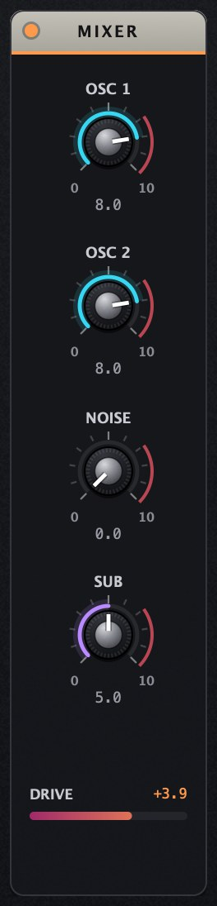
The mixer blends OSC 1, OSC 2, NOISE and SUB of one layer (each layer has its own). The 0–10 scale works like on a Moog: up to 7 the mixer is clean, above 7 the summing stage starts to overdrive (red arc at the knob). Overdrive adds up: two oscillators at 9 bite more than one at 10.
The DRIVE meter under the mixer shows how hard it is saturating right now. The sub has its own stage and bypasses the main filters, going straight to the sub filter.
| Level (sine A1) | 3rd harmonic |
|---|---|
| 7 | −47 dB |
| 10 | −19 dB |
05Filters
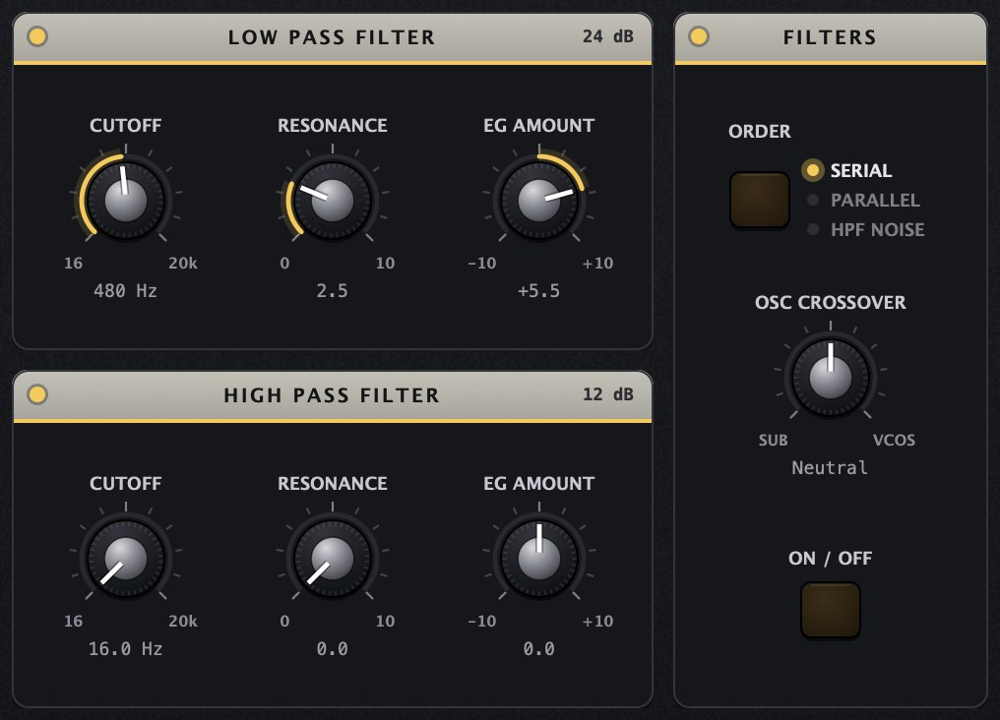
- LOW PASS: 4-pole ladder filter (24 dB/oct) with zero-delay feedback. From RESONANCE ~9.5 it self-oscillates in tune (within 1 cent from 220 Hz to 3 kHz). The bass loss at high resonance is partly compensated, the way a Moog behaves.
- EG AMOUNT: how far the filter envelope (CNTRL) moves the cutoff: 10 = 7 octaves, negative values close it.
- HIGH PASS: 12 dB, with resonance and its own EG AMOUNT.
- ORDER: Serial = LPF then HPF (band pass). Parallel = both summed (notch). HPF Noise = oscillators go to the LPF, noise to the HPF (clean low end and separate air).
- OSC CROSSOVER + ON/OFF: left = low pass on the sub (20 kHz → 40 Hz), right = high pass on the oscillators (16 → 500 Hz). When on, stereo below 120 Hz is also removed: spread stays in the mids and highs only.
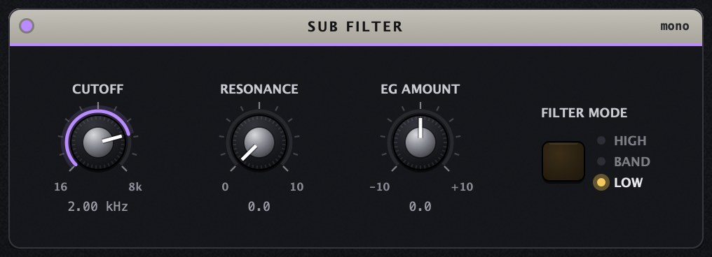
06The CNTRL page
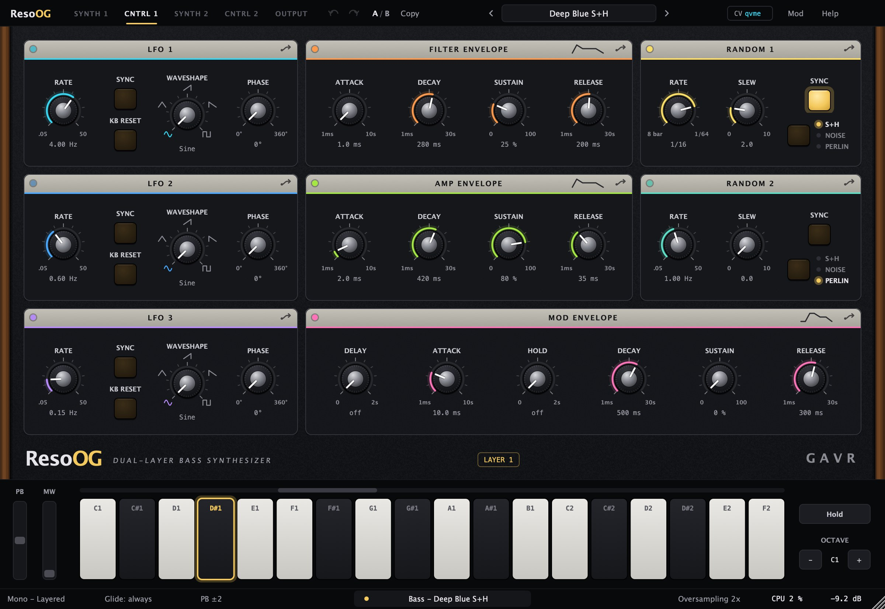
| Module | Controls |
|---|---|
| LFO 1–3 | RATE 0.05–50 Hz, or with SYNC a note division (8 bars to 1/64, triplets and dotted). KB RESET restarts the LFO on every note at PHASE. Shapes Sine, Triangle, Ramp Up, Ramp Down, Square. |
| FILTER ENVELOPE | ADSR for the EG AMOUNT of all three filters. Attack 1 ms–10 s, decay and release 1 ms–30 s. The attack charges like an RC circuit (fast start, soft end). |
| AMP ENVELOPE | ADSR of the layer's volume. |
| MOD ENVELOPE | DAHDSR (delay, attack, hold, decay, sustain, release) – a free envelope for modulation only. |
| RANDOM 1–2 | S+H = steps, Noise = fast random, Perlin = smooth organic drift. SLEW smooths the jumps, SYNC clocks it to the tempo. |
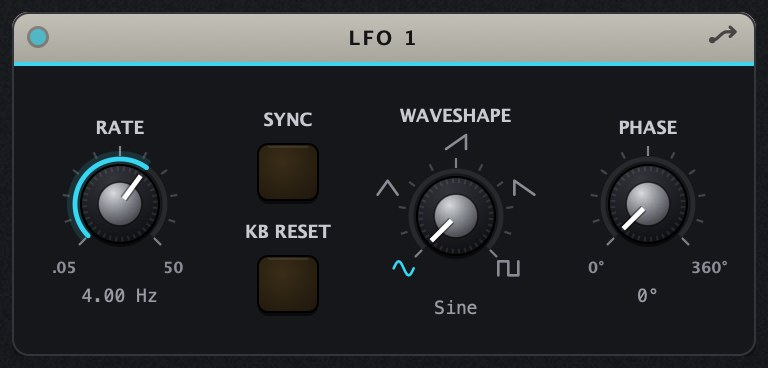
07Modulation
ResoOG has 24 modulation slots. Each one runs source → function → controller → amount → destination. Any continuous knob of either layer or the output can be a destination. Sources of one layer can modulate the other.
Creating a modulation
- Drag: the arrow in an LFO, envelope or random header → drop it on a knob (25 % depth).
- Right-click a knob → Modulate with → source (also velocity, keyboard, mod wheel, pressure…).
- In the Mod panel (top right or the 9 key) with + Add.
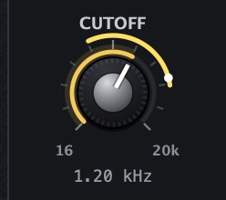
The outer ring in the source colour shows the modulation range, the white dot its current value. Hover the ring to see Random 1 ±20 %; drag the ring up/down to change the depth, use the wheel for steps. Right-click offers Disable, Invert, Bipolar, Remove and opening the slot in the panel.
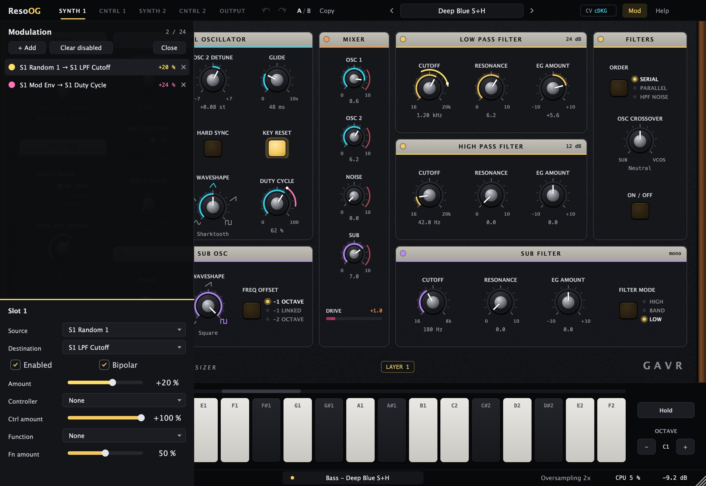
| Slot option | Meaning |
|---|---|
| Bipolar | Bipolar sources (LFO, random, pitch bend) swing around the knob position. Off = one direction only. |
| Amount | Depth −100 to +100 % of the knob's range. Negative = inverted. |
| Controller · Ctrl amount | A second source as a “VCA”: the modulation is only as strong as the controller. Example: LFO → Frequency with Mod Wheel as controller = vibrato only when you push the wheel. |
| Function · Fn amount | Scale, Offset, Low / High Clip, Exponential, Norm Exponential, Low / High Pass, Slew, Low / High Slew, Sample & Hold, Bounce. |
Bounce is ball physics: when the signal drops, the value falls freely and bounces off it. On a ramp LFO it makes a wobble that lands and settles (preset Bounce Wobble). Sources: envelopes, LFOs, randoms and accent of both layers, velocity, keyboard tracking (49 % on cutoff = the filter follows the keys 1:1), mod wheel, pressure, pitch bend, release velocity, MPE timbre (CC74) and constant.
08The OUTPUT page
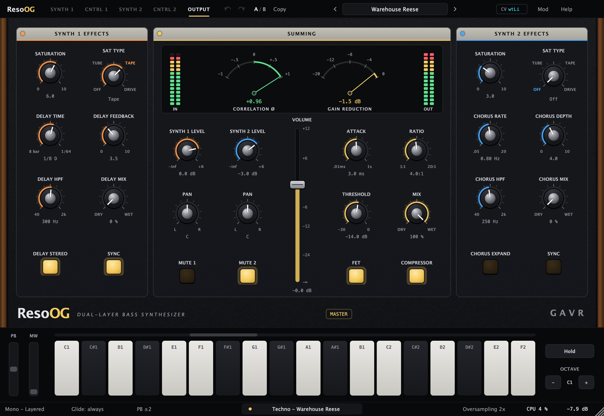
Saturation (per layer)
Saturation runs 2× oversampled with automatic loudness compensation, so you compare character, not level. SAT TYPE Off = bypassed (SATURATION then does nothing).
| Type | How it works | Sound |
|---|---|---|
| Tube | Asymmetric tanh curve (negative half harder) | Even harmonics, warm thickening |
| Tape | Soft symmetric curve + high roll-off growing with drive | Round, compressed, darker |
| Drive | Cubic soft clip turning hard | Transistor bite, aggressive |
Delay (synth 1) · Chorus (synth 2)
- Delay: time 1 ms–1.4 s or in note values (SYNC), FEEDBACK, DELAY HPF inside the feedback loop (repeats never muddy the sub), MIX, DELAY STEREO = ping-pong. Time changes glide like tape.
- Chorus: RATE, DEPTH, CHORUS HPF (only frequencies above it are chorused, the sub stays solid), MIX, EXPAND = wider stereo.
Summing, compressor and meters
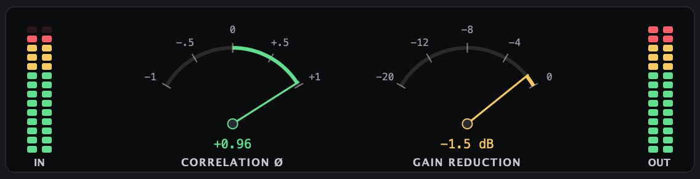
- SYNTH 1/2 LEVEL, PAN, MUTE and the vertical VOLUME (double-click = 0 dB).
- Compressor (COMPRESSOR button): ATTACK 0.01 ms–1 s, RATIO 1:1–20:1, THRESHOLD with automatic make-up, MIX for parallel compression. FET = feedback detection and a little grit like a classic FET limiter. Release is automatic: longer when it works harder.
09Playing and bars
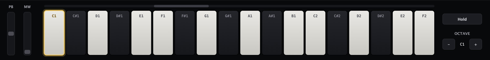
Silent preset changes (Help, on by default): when you change presets the output fades out over 6 ms, the preset loads, delay echoes and old notes are cleared, and the sound fades back in. No clicks and no echoes of the old sound in the new one.
125–140 BPM · club, sub down to 40 Hz
Techno bass
The bass needs a clean mono low end, has to sit with the kick, and needs character in the mids.
Rolling bass
preset Classic Ladder BassPlay sixteenths between the kicks. The length of the “pluck” is FILTER DECAY; for groove add velocity → EG AMOUNT (preset Velocity Bite). Keep the sub on SINE −1 octave under the kick.
Wide bass, mono low end
preset Warehouse ReeseThe crossover takes the low end away from the oscillators and leaves the sub clean and mono. Correlation on the OUTPUT page should stay above +0.3.
115–125 BPM · long-feedback delay
Dub techno
Short chord stabs dissolving in echoes. The HPF inside the delay loop keeps the echoes off the bass.
One-finger stab
preset Chord Echo Dub / Dub Techno StabSynth 2 plays a fifth (FREQUENCY +7), so one key sounds like a chord. Automate synth 1's LPF CUTOFF slowly over eight bars and DELAY FEEDBACK in the break.
130–145 BPM · resonance and accent
Acid
The squelch comes from high resonance, a short filter envelope, accent and slides.
Classic acid line
preset Acid Squelch / Acid SquareNotes with velocity above 96 get the accent (more filter), overlapping notes slide without retriggering the envelope. Drive saturation 5–7 adds aggression.
free tempo · long notes
Ambient
Slow envelopes, Perlin random and slow LFOs make a sound that never repeats exactly.
Breathing drone
preset Subharmonic Drone / Breathing Noise BassHold one note for a long time. Order HPF Noise sends the noise through its own high pass, so it adds air without clouding the low end.
inspired by Moog models
Moog classics
The presets in the Classic category imitate the character of famous Moogs. They are not circuit models, but settings in the same spirit.
| Inspiration | Preset | Key to the sound |
|---|---|---|
| Minimoog Model D | Seventies Fat Bass | two saws at 8 (overdriven mixer), ladder ~500 Hz |
| Taurus | Pedal Thunder · Pedal Sub Pressure | sub −2 octaves, slow filter decay, glide |
| Sub 37 / Sub Phatty | Multidrive Growl | sharktooth + square at 9, Drive saturation |
| Prodigy | Sync Sweep Bass | hard sync, mod envelope on detune |
| Voyager | Wide Voyager Lead | osc 2 +1 octave, glide, vibrato on the mod wheel |
| Mother-32 | Patchable Seq Bass | resonant square, accent, synced S+H |
| Subharmonicon | Subharmonic Drone | a fifth on osc 2, sub −2 octaves |
| Matriarch | Stereo Matriarch Pad | both layers, chorus + ping-pong, long envelopes |
| Little Phatty | Phatty Pluck | fast closing saw, dotted delay |
10Factory presets
39 presets in categories. Click the preset name → Factory → category, or use the ◀ ▶ arrows.
| Preset | What for and what to turn |
|---|---|
| Basics | |
| Init | Neutral starting point: one saw layer, open filter envelope. Start here for your own sounds. |
| Bass | |
| Classic Ladder Bass | Round analog bass for techno and house. Tweak LPF CUTOFF for brightness and Filter DECAY for the pluck. |
| Deep Blue S+H | Sharktooth bass with a tempo-synced sample & hold on the cutoff and dub delay. Change Random 1 division for other rhythms. |
| Reese Wide | Two detuned saws spread wide, low end kept mono by the crossover. DETUNE sets the speed of the phasing. |
| Perlin Growl | Sharktooth growl with a smooth Perlin random moving the filter - never repeats exactly. |
| Bounce Wobble | Synced ramp LFO on the cutoff through the Bounce function: wobbles that fall and bounce. Change LFO 1 division. |
| Rubber Funk | Seventies funk bass with a rubbery filter and legato slides - play overlapping notes. |
| Octave Pop Bass | Eighties synth-pop: oscillator 2 an octave up for the bounce, tight plucky envelope. |
| Velocity Bite | Play soft for a round bass, hard for a biting one: velocity opens the filter envelope. |
| Triplet Wobble | Synced eighth-triplet sine wobble on the cutoff. Change LFO 1 DIVISION for other grooves. |
| Sub | |
| Sub Foundation | Clean sine sub with a hint of harmonics for small speakers. Raise OSC 1 for more growl. |
| Pedal Sub Pressure | Taurus-like pure sub weight: sine through tube saturation so it reads on small speakers. |
| Classic | |
| Seventies Fat Bass | In the spirit of the Minimoog Model D: two saws pushed into the mixer, round ladder and a short filter bite. Lower CUTOFF for funk, raise EG AMOUNT for more snap. |
| Pedal Thunder | Inspired by the Taurus bass pedals: deep saw over a sine two octaves down, slow filter decay and a little glide. Play single long notes. |
| Multidrive Growl | Sub 37 style growl: sharktooth and square driven hard in the mixer plus transistor drive. SATURATION on OUTPUT sets the dirt. |
| Sync Sweep Bass | A nod to the Prodigy's hard sync: the mod envelope sweeps oscillator 2 for that tearing attack. MOD DECAY = sweep length. |
| Patchable Seq Bass | Mother-32 flavour: resonant square for sequences with accent and a stepped random on the cutoff. Play velocities above 96 for accents. |
| Acid | |
| Acid Squelch | Resonant saw with accent and legato glide - play overlapping notes and high velocities. RESONANCE and EG AMOUNT do the talking. |
| Acid Square | Squelchy square-wave acid line with accent and slides. Automate CUTOFF and RESONANCE. |
| Acid Distorted | Saw acid pushed through transistor drive, with an LFO adding movement to the resonance. |
| Lead | |
| Sync Growl | Hard-synced oscillator 2 swept by the mod envelope. MOD DECAY sets the sweep, DETUNE the base colour. |
| Wide Voyager Lead | Voyager-like lead: saw and square an octave apart, glide, vibrato on the mod wheel, stereo spread and delay. |
| Glass Sine Lead | Pure sine and triangle two octaves apart, slow glide, vibrato on the mod wheel - singing lead. |
| Pressure Swell | Aftertouch (or MPE pressure) opens the filter and adds vibrato - for expressive keyboards. |
| Pluck | |
| Pulse Pluck | Narrow pulse with a slow duty-cycle LFO, short plucky envelope. Good for arpeggios. |
| Phatty Pluck | Little Phatty style pluck: bright saw closing fast, dotted eighth delay. Shorter FILTER DECAY = tighter. |
| Techno | |
| Techno Rumble | Saturated sine sub with a dark noise layer - the rumbling kick companion. NOISE COLOR changes the texture. |
| Berlin Sequence | Berlin school sequencer bass: resonant saw, very slow LFO opening the filter over bars, sixteenth delay. |
| Detroit Stab | Short square stab with chorus on a second layer and dotted delay - classic Detroit chords played one note at a time. |
| Warehouse Reese | Dark detuned Reese for warehouse techno: wide saws, mono crossover, tape saturation and compression. |
| Dub | |
| Dub Techno Stab | Both layers: dark saw stab with chorus on synth 2 and long filtered delay. Turn DELAY FEEDBACK for longer echoes. |
| Dub Sub Wobble | Soft triangle sub with a slow synced wobble and a long filtered dub delay. |
| Chord Echo Dub | Square pluck with a fifth on synth 2, chorus and long echoes - one finger dub chords. |
| Duo | |
| Duo Split | Duophonic: hold two notes - synth 1 plays the lower as bass, synth 2 the higher as a lead with delay. |
| Duo Bass & Lead | Duophonic split: the lower held note is a fat bass, the higher a square lead with glide and delay. |
| Ambient | |
| Ambient Drone Bass | Slow, evolving triangle bass: Perlin drift on the detune, a slow LFO on the cutoff. Hold long notes. |
| Subharmonic Drone | After the Subharmonicon: a fifth on oscillator 2, sub two octaves down, slow filter LFO. Hold one note and let it breathe. |
| Stereo Matriarch Pad | Both layers, wide and slow like a stereo Matriarch patch: chorus on synth 2, ping-pong delay on synth 1. Long attack and release. |
| Breathing Noise Bass | Triangle bass with pink noise on its own high pass (HPF Noise order) and Perlin drift on the cutoff. |
11Measurements
Values are measured by the ResoOGTests app on every build (48 kHz).
| Property | Value |
|---|---|
| Aliasing saw B6 (1976 Hz) below 10 kHz, 1× / 2× / 4× | −78 / −93 / −93 dB |
| Aliasing 2×: saw C5 / pulse 25 % / hard sync | −97 / −93 / −94 dB |
| Oscillator top end (5th harmonic of B6) at 2× | −0,9 dB |
| Ladder self-oscillation 220 / 1000 / 3000 Hz | < 1 cent |
| CPU: 1 layer 2× / 2 layers + effects 2× / 2 layers 4× | ~1,8 / ~3,4 / ~6 % |
| Latency (2× layer + 2× saturation) at 48 kHz | a few samples, reported to Live |
12Troubleshooting
| Problem | Fix |
|---|---|
| Synth 2 / CNTRL 2 does nothing | The layer is muted (MUTE 2). Click the red badge at the bottom or turn off MUTE 2 on OUTPUT. |
| SATURATION does nothing | SAT TYPE is Off. Pick Tube, Tape or Drive. |
| Delay / chorus knobs do nothing | DELAY MIX / CHORUS MIX is at 0 %. |
| The compressor does nothing | Turn on the COMPRESSOR button. |
| OSC CROSSOVER | Works only with ON/OFF below it switched on. |
| LFO PHASE changes nothing | PHASE sets where the LFO starts on KB RESET (or in time with SYNC). |
| Glide does not work | The bottom bar says “Glide: legato”: glide happens only between overlapping notes. |
| Noise or whistling up high | Oversampling 1× in the bottom bar; switch to 2× or 4×. |
13Mouse and keys
| Action | Result |
|---|---|
| Drag a knob up/down | Change the value, Shift = fine |
| Wheel over a knob | Step (one choice on switches) |
| Double-click a knob | Type a value: 2.5k, A3, C#3+20, 120 ms, 2s, L 30 |
| Cmd/Ctrl-click | Default value |
| Right-click a knob | Reset, type, Modulate with, manage modulations |
| Drag a knob's ring | Modulation depth |
| CNTRL header arrow → knob | New modulation |
| 1–5 | SYNTH 1, CNTRL 1, SYNTH 2, CNTRL 2, OUTPUT |
| 9 / 0, Esc | Open / close the modulation panel |
| Cmd+Z, Shift+Cmd+Z | Undo / Redo |
14Install and files
| macOS | Windows | |
|---|---|---|
| VST3 | ~/Library/Audio/Plug-Ins/VST3/ResoOG.vst3 | C:\Program Files\Common Files\VST3\ResoOG.vst3 |
| AU | ~/Library/Audio/Plug-Ins/Components/ResoOG.component | – |
| User presets | ~/Documents/Gavr/ResoOG Presets/*.resoog | Documents\Gavr\ResoOG Presets\*.resoog |
| Settings (tooltips, size) | ~/Library/Application Support/Gavr/ResoOG/ | %APPDATA%\Gavr\ResoOG\ |
In Ableton: Settings → Plug-Ins → turn on “Use VST3 Plug-In System Folders” → Rescan. ResoOG is under Plug-Ins → Gavr.